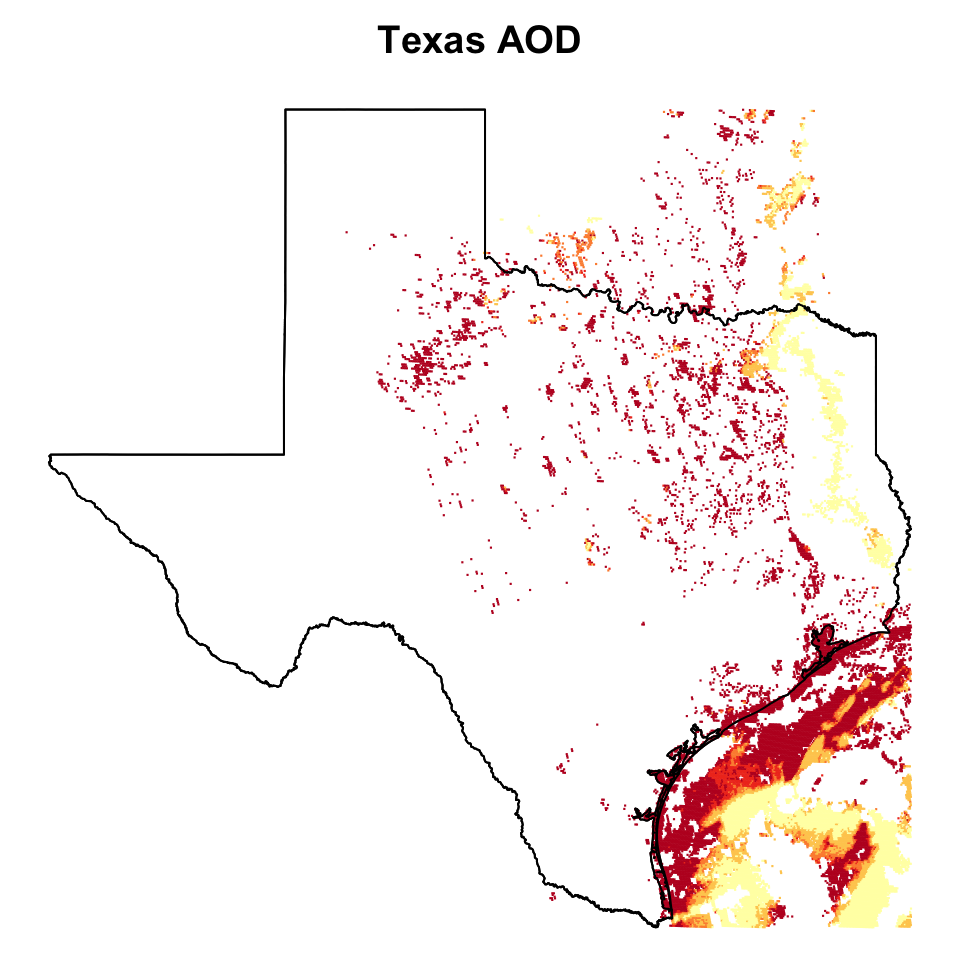
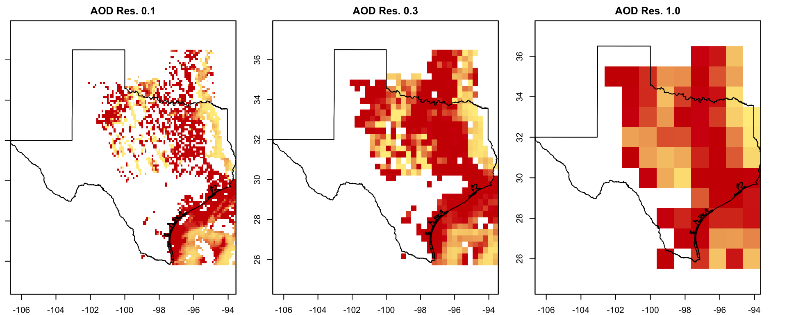
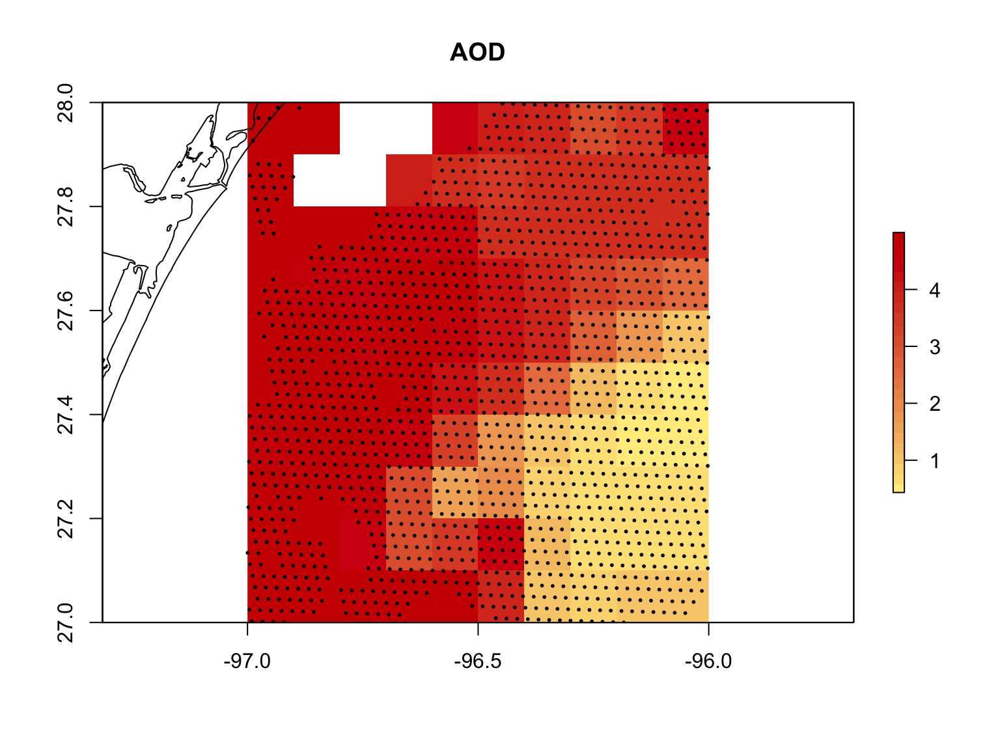
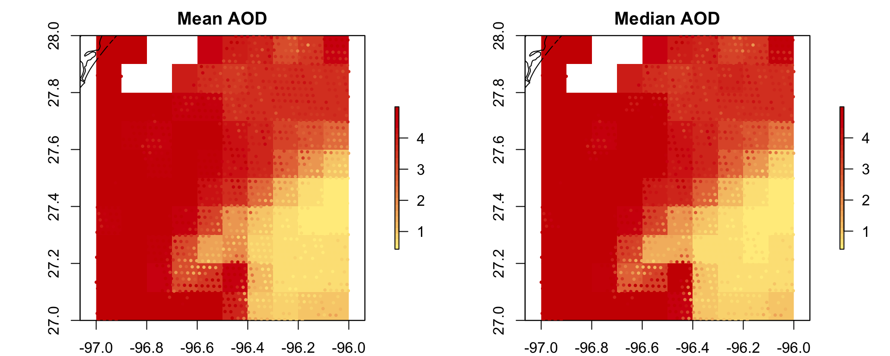
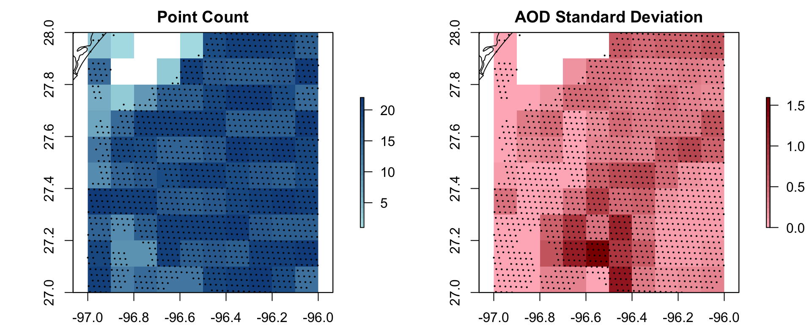
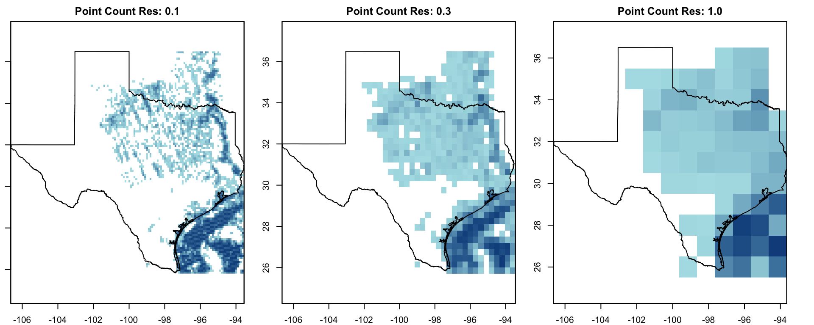
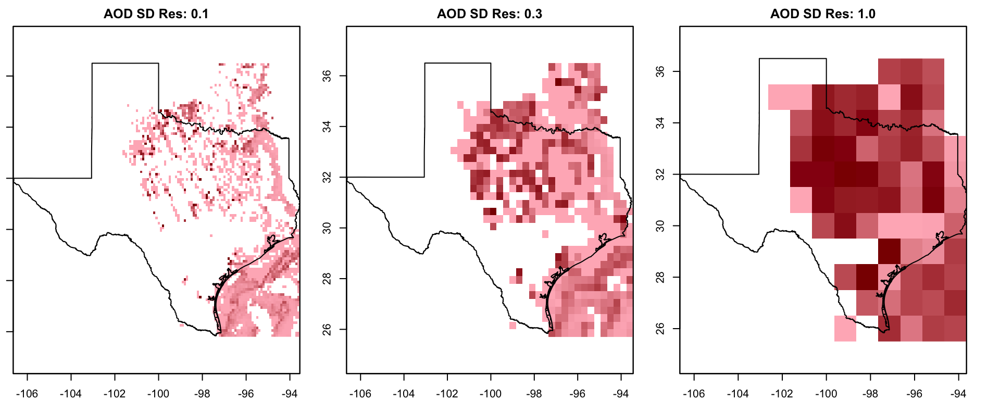

grid_sizes.RmdA raster image divides geographic space into uniform pixels or “cells”. The uniform size of these cells is determined by the resolution of the raster so that higher resolutions reduce cell area and increase the detail and accuracy of the final image. The goesaodc_createRaster() function defines a colored cell for each grid space with at least one data point, which raises two issues:
When a grid space is sparsely populated, a cell will be defined for the whole area using only a few data possibly concentrated in just a small corner. These might not accurately represent the AOD level for the rest of the cell.
When a grid space is densely populated, the cell will have to generalize a lot of data values in order to determine its final color. If there is a large disparity in AOD throughout the region, this will not be visible if the cell color is based on the average or median reading level.
In this short vignette we will explore the effects of different raster grid sizes on collections of spatial points. A good place to find areas is Texas on May 9th, 2019, where the sea just off the east coast is dense with data points:

Here are three rasters with different resolutions. Notice how the lower resolution grids suggest there is data for areas where no AOD measurements have been taken at all:

As the tiles increase in size they become more and more inaccurate in summarizing the true aerosol depth over the area they cover. Let’s zoom to the dense cloud of points off the southeastern coast near Corpus Christi so we can better undsertand how data points influence individual cells. Each measurement location is marked with a black dot:

Here we can see how the Advanced Baseline Imager (ABI) aboard the GOES-16 satellite takes its sample measurements in a non-orthogonal grid. Even in this uniform arrangement though there are still holes and gaps left in the readings. The cell colors in this plot are determined by the mean AOD value of all the points within the area they cover. In the dense spaces of the grid this may end up averaging around twenty points while the more more sparse regions to the upper-left may only use five or fewer values.
Drawing the sample points with the same AOD palette shows how the raster generalizes the individual readings within each cell. Let’s compare how different our results are when using either the mean or median:

The two raster images turn out to be pretty similar. One could argue though that the median gives a better representation since the cells of that map blend better with the colors of all their points for some regions.
It’s possible to use different summarizing statistics besides the mean and median to color cells. Rasters can be generated based on the minimum data value in a cell, the maximum value, the first or last, the total number of values, the standard deviation, and several other statistics. Let’s try out the count and standard deviation options:

Due to the irregularity of the data point layout, the count plot displays a sort of ripple effect. Meanwhile, the standard deviation plot is useful to determine areas where we may encounter the problem from earlier where a cell has to generalize values that differ greatly.
Now that we know what is going on in a small area, let’s zoom back out to the state overview and see how various resolutions influence the apparent point counts and standard deviations of Texas:

